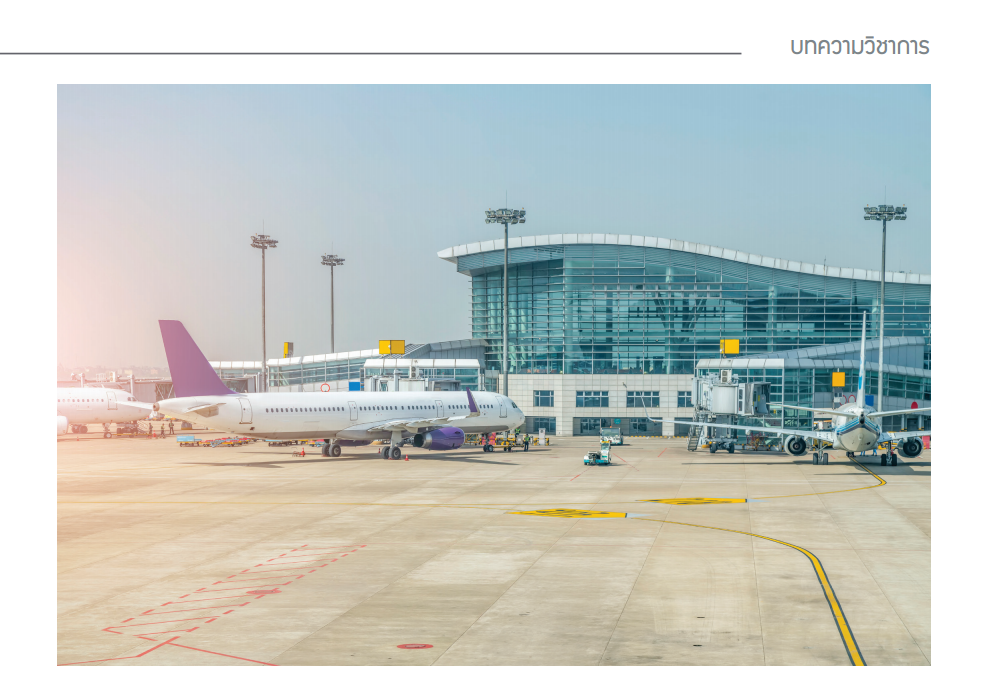

[บทความวิชาการ] สรุปสาระสำคัญของกฎกระทรวงกำหนดให้ผู้นําของเข้าเพื่อการผ่านแดนหรือการถ่ายลำ ได้รับยกเว้นไม่ต้องปฏิบัติตามกฎหมาย ว่าด้วยศุลกากรทั้งหมดหรือแต่บางส่วน พ.ศ. 2563

เนื่องด้วยสถานการณ์การระบาดของโรคติดเชื้อไวรัสโคโรนา 2019 (Covid-19) ยังผลให้องค์การอนามัยโลกต้อง ประกาศให้การระบาดของโรคติดเชื้อไวรัสโคโรนา 2019 เป็นการระบาดใหญ่ เมื่อ 2-3 ปีที่ผ่านมานั้น สถานการณ์ในห้วงเวลา ดังกล่าวมีความรุนแรง จนกระทบต่อความมั่นคงของประเทศ ดังนั้น เพื่อสกัดกั้นการแพร่ระบาด ป้องกันมิให้สถานการณ์ ทวีความรุนแรงมากยิ่งขึ้น นายกรัฐมนตรีได้ประกาศสถานการณ์ฉุกเฉินในทุกเขตท้องที่ทั่วราชอาณาจักร ตั้งแต่วันที่ 26 มีนาคม พ.ศ. 2563 จนถึงวันที่ 30 เมษายน พ.ศ. 2563 ตามประกาศสถานการณ์ฉุกเฉินในทุกเขตท้องที่ทั่วราชอาณาจักร ลงวันที่ 25 มีนาคม พ.ศ. 2563 และให้มีการขยายระยะเวลาดังกล่าวไปจนถึงวันที่ 31 พฤษภาคม พ.ศ. 2563 และประกาศ เรื่องการ ขยายระยะเวลาการประกาศสถานการณ์ฉุกเฉินในทุกเขตท้องที่ทั่วราชอาณาจักร (คราวที่ 1) ลงวันที่ 28 เมษายน พ.ศ. 2563 ข้อ 3 ของข้อกำหนดออกตามความในมาตรา 9 แห่งพระราชกำหนดการบริหารราชการในสถานการณ์ฉุกเฉิน พ.ศ. 2548 (ฉบับที่ 1) ลงวันที่ 25 มีนาคม พ.ศ. 2563 กำหนดว่า “การปิดช่องทางเข้ามาในราชอาณาจักร ในการใช้ยานพาหนะไม่ว่าจะ เป็นอากาศยาน เรือ รถยนต์ หรือพาหนะอื่นใด หรือในการใช้เส้นทางคมนาคมไม่ว่าทางอากาศ ทางน้ำ หรือทางบก เพื่อเดินทางเข้ามาในราชอาณาจักร ให้เจ้าหน้าที่ผู้รับผิดชอบปิดช่องทางเข้าออก ด่าน จุดผ่านแดนหรือจุดผ่อนปรนตาม กฎหมายว่าด้วยโรคติดต่อและกฎหมายว่าด้วยคนเข้าเมือง สำหรับผู้โดยสารหรือผู้ที่เดินทางเข้ามาในราชอาณาจักร…”
สภาพปัญหา
จากสถานการณ์และมาตรการทางกฎหมายดังกล่าว ก่อให้เกิดผลกระทบต่อคมนาคมในวงกว้างทั้งในประเทศและต่างประเทศ เที่ยวบิน เที่ยวเรือซึ่งถูกจองระวางไว้ ได้ถูกยกเลิกเป็นจำนวนมาก จึงมีผลทำให้สินค้าผ่านแดน-ถ่ายลำ ไม่อาจ ทำการขนส่งต่อไปยังประเทศปลายทางได้ตามกำหนด จากประเด็นปัญหาดังกล่าว จึงได้มีข้อเสนอมายังกรมศุลกากรเพื่อให้พิจารณาดำเนินการแก้ไข บรรเทาผลกระทบจากสถานการณ์ดังกล่าว (รายละเอียดตามเอกสารแนบ)
ข้อกฎหมายที่เกี่ยวข้อง
-
มาตรา 6 แห่งพระราชบัญญัติศุลกากร พ.ศ. 2560 กำหนดว่า “ในกรณีที่มีพฤติการณ์พิเศษเพื่อประโยชน์ใน การดำเนินการตามพระราชบัญญัตินี้ให้รัฐมนตรีมีอำนาจออกกฎกระทรวงกำหนดให้ผู้นําของเข้าหรือผู้ส่งของออกได้รับยกเว้น ไม่ต้องปฏิบัติตามพระราชบัญญัตินี้ทั้งหมดหรือแต่บางส่วน โดยจะกำหนดเงื่อนไขให้ต้องปฏิบัติไว้ด้วยก็ได้ ในกรณีที่มีพฤติการณ์พิเศษตามวรรคหนึ่งเกิดขึ้นแก่อากาศยาน และมีความจำเป็นเพื่อประโยชน์ในการคมนาคม ระหว่างประเทศ รัฐมนตรีมีอาจออกคำสั่งเป็นหนังสือเฉพาะกรณี ให้ผู้นําของเข้า ผู้ส่งของออก หรือผู้ควบคุมอากาศยานใด ได้รับยกเว้นไม่ต้องปฏิบัติตามที่กำหนดไว้ในหมวด 3 การนําของเข้าและการส่งของออก โดยจะกำหนดเงื่อนไขให้ต้องปฏิบัติ ไว้ด้วยก็ได้”
-
มาตรา 102 กำหนดว่า “ผู้ใดนําของเข้ามาเพื่อการผ่านแดนหรือการถ่ายลำออกนอกราชอาณาจักร ให้ยื่นใบขนสินค้าตามแบบ และปฏิบัติตามหลักเกณฑ์ วิธีการ และเงื่อนไขที่อธิบดีประกาศกำหนดของตามวรรคหนึ่งไม่อยู่ ภายใต้ความรับผิดที่จะต้องเสียอากร หากได้ปฏิบัติตามวรรคหนึ่ง และได้นําของออกไปนอกราชอาณาจักรภายในสามสิบ วันนับแต่วันที่นําเข้ามาในราชอาณาจักร…”
-
มาตรา 103 กำหนดว่า “ในกรณีที่ผู้นําของเข้าเพื่อการผ่านแดนหรือการถ่ายลำไม่นําของออกไปนอกราชอาณาจักร ภายในระยะเวลาตามมาตรา 102 วรรคสอง หรือขอเปลี่ยนการผ่านพิธีการศุลกากรเป็นการนําเข้าและได้ปฏิบัติตามพระราช บัญญัตินี้แล้ว แต่ไม่เสียอากร หรือไม่ปฏิบัติตามกฎหมายอื่นที่เกี่ยวข้องกับการศุลกากรภายในระยะเวลาดังกล่าว ให้ของนั้นตกเป็นของแผ่นดิน”
บทสรุป
จากผลการศึกษาและข้อพิจารณาดังกล่าวสรุปว่าการผ่านแดนและการถ่ายลำมีจุดเริ่มต้นและจุดสิ้นสุดของการ ขนส่งอยู่นอกราชอาณาจักร สัญญาขนส่ง และใบตราส่งกำหนดผู้รับ ณ สถานที่ปลายทางที่อยู่นอกราชอาณาจักร แต่อาศัยประเทศไทยเป็นทางผ่าน หรือเพื่อเปลี่ยนยานพาหนะไปยังประเทศปลายทาง ดังนั้น ของผ่านแดน-ถ่ายลำ จึงมิได้ใช้ หรือบริโภคในราชอาณาจักร ไม่อยู่ภายใต้ความรับผิดที่จะต้องเสียอากร แต่ต้องยื่นใบขนสินค้าตามแบบและปฏิบัติตาม หลักเกณฑ์ วิธีการ และเงื่อนไขที่อธิบดีประกาศกำหนดผู้นําของเข้าเพื่อการผ่านแดน นําของเข้ามาเพื่อการผ่านแดน หรือการถ่ายลำออกนอกราชอาณาจักร ต้องนําของออกไปนอกราชอาณาจักรภายในสามสิบวันนับแต่วันที่นําเข้ามา ในราชอาณาจักร หากฝ่าฝืนของนั้นย่อมตกเป็นของแผ่นดิน แต่เนื่องด้วยจากสถานการณ์ระบาดของโรคติดเชื้อไวรัส โคโรนา 2019 (Covid-19) ได้ก่อให้เกิดผลกระทบต่อคมนาคมในวงกว้างทั้งในประเทศและต่างประเทศ ส่งผลทำให้สินค้าผ่านแดน-ถ่ายลำ ไม่อาจทำการขนส่งต่อไปยังประเทศปลายทางได้ตามกำหนด จึงถือเป็นพฤติการณ์พิเศษ ตามมาตรา 6 แห่งพระราชบัญญัติศุลกากร พ.ศ. 2560 จึงได้มีการออกกฎกระทรวงกำหนดให้ผู้นําของเข้าเพื่อการผ่านแดน หรือการถ่ายลำได้รับยกเว้นไม่ต้องปฏิบัติตามกฎหมายว่าด้วยศุลกากรทั้งหมดหรือแต่บางส่วน พ.ศ. 2563 เพื่อแก้ไขและบรรเทาผลกระทบจากสถานการณ์ดังกล่าว
บทความโดย : นายวรินทร ชีวิตโสภณ ผู้อำนวยการส่วนกฎหมายและระเบียบ กองกฎหมาย
ที่มาบทความ : กรมศุลกากร